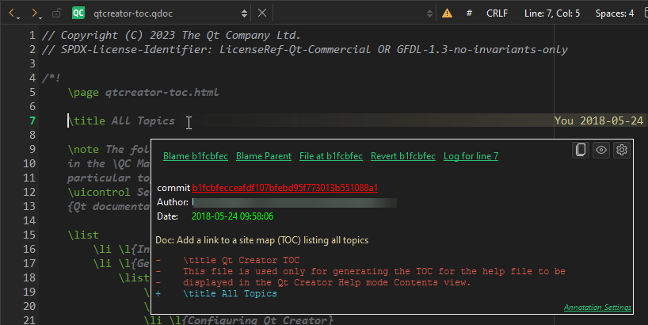

git reset
Git uses an index to stage changes. The index is committed on the next commit. Git allows you to revert back to the state of the last commit as well as to the state staged in the index.
Reset all uncommitted changes in the current file
To undo all unstaged changes and reset the current file to the state of the index, go to Tools > Git > Current File and select Undo Unstaged Changes for <file>.
To return the current file to the state it was in right after the last commit, select Undo Uncommitted Changes for <file>. This reverts all changes, discarding the index.
Reset changes in the local repository
To reset changes in the local repository, go to Tools > Git > Local Repository and select Reset.
Select the commit to reset the working directory to. This is useful after applying patches for review, for example.
Select the reset type:
- Hard reset discards all changes to tracked files in the working tree.
For more information about how to recover accidently removed commits, see git reflog.
- Mixed reset undoes the selected commits and unstages all changes, but keeps the working tree unchanged.
- Soft reset undoes the selected commits but keeps all staged changes and the working tree unchanged.
To recover removed files, select Recover Deleted Files.
Revert commits in the editor
To revert the commit you are currently hovering over, select Revert <hash> in the annotation view.

Actions in the annotation view for instant blame
You are asked to confirm the reversion.
See also How To: Use Git and Git.